About this work
Luke Nathan Hayes develops the Aura of Intelligence, GAJRA Earth and connected proposals from Minjerribah on Quandamooka Country. This site brings together the whole-system preview and the reviewed paper on superintelligence and Australian sovereignty.
The intended audience includes people encountering these ideas for the first time, community organisers, researchers and readers who want to inspect the sources. The site explains each component before asking readers to follow its connections.
Inspect this website’s source · Read the original documents · Explore the related projects
How to read the editions
The whole-system preview incorporates household bill de-slop, the 22-song album count, GAJRA Earth’s public alignment watch and the proposed July 2035 global festival marking Live Aid’s fiftieth anniversary. The sovereignty paper and its scenarios are dated 5 November 2026.
The introductory sovereignty chapters are educational adaptations. The complete reading edition preserves the source paper’s argument, links and calculation methods. The source documents are available to download.
Images and photographs
Every page has a distinct hero image. The collection combines 18 AI-generated concept scenes with 12 real photographs. Photographs show existing places and equipment; concept images illustrate possible settings for the proposals.
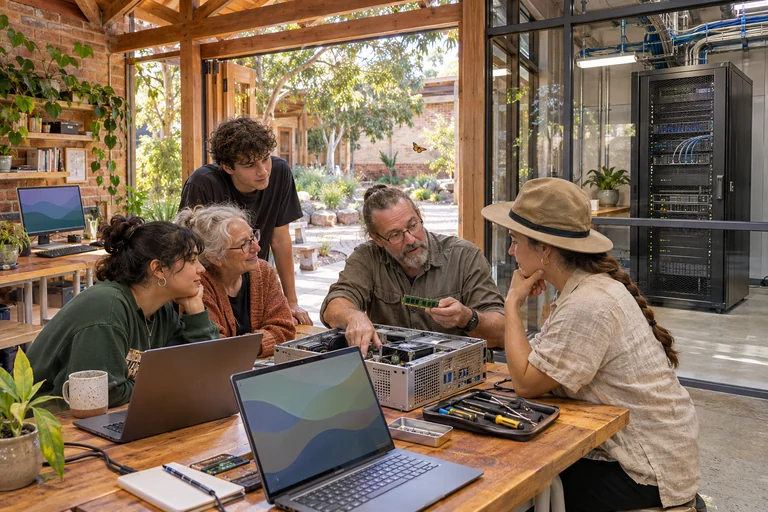
Local Compute
An imagined community computing workshop. AI-generated concept image.

Global Festival
An imagined setting for the proposed 2035 global festival. AI-generated concept image.
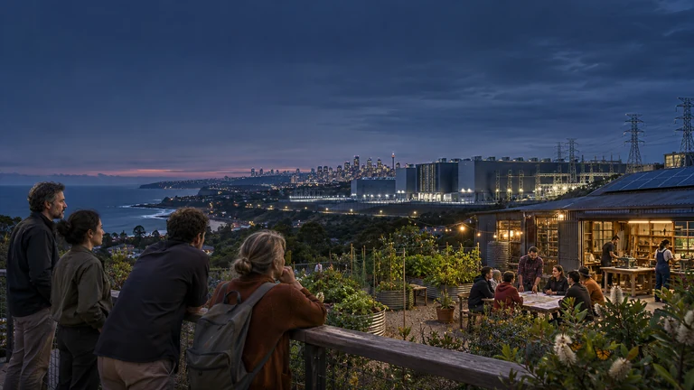
Choice Hero
An imagined future, with choices still open. AI-generated concept image.

Start Here Hero
Imagined first steps in understanding the systems that shape everyday life. AI-generated concept image.
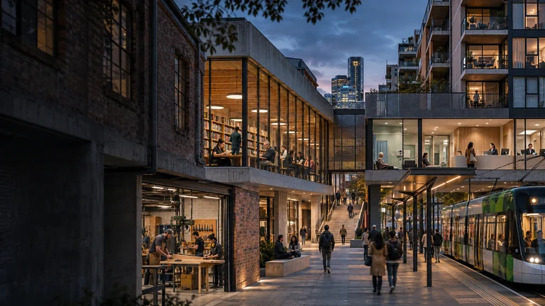
Explore Hero
A connected urban precinct imagined as one place with many useful relationships. AI-generated concept image.
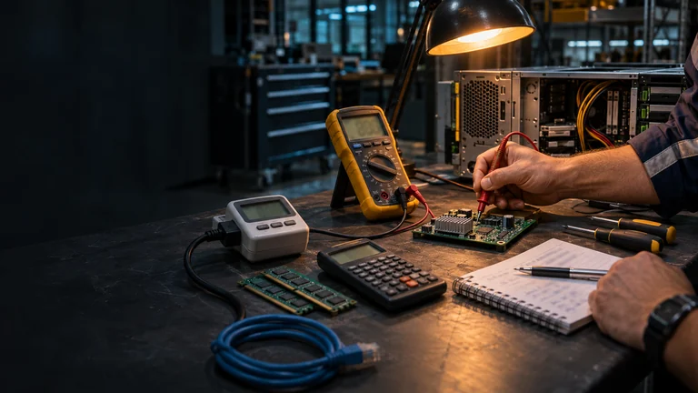
Tools Hero
An imagined practical workspace for checking claims against measurements. AI-generated concept image.
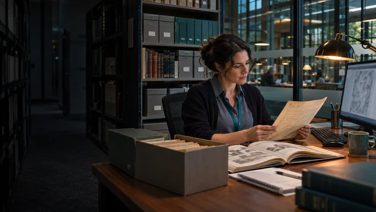
Library Hero
An imagined civic archive where people can compare sources and follow the evidence. AI-generated concept image.
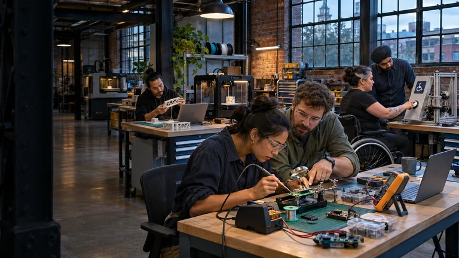
Projects Hero
An imagined urban studio where people turn practical ideas into working projects. AI-generated concept image.
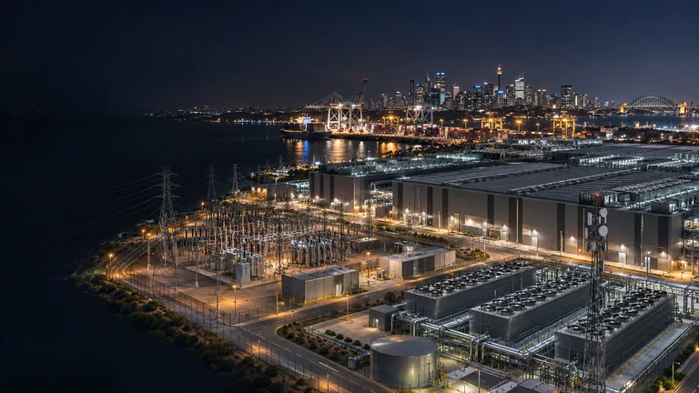
Industrial intelligence and national infrastructure
An imagined Australian AI and industrial infrastructure precinct. AI-generated concept image, not a photograph of an operating project.
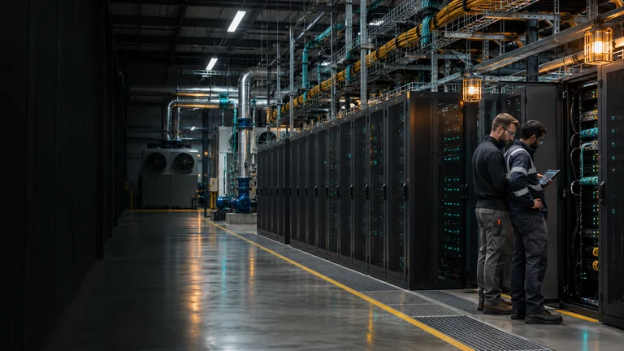
The physical infrastructure behind AI
An imagined data-centre maintenance scene showing the physical systems and people behind computing. AI-generated concept image.
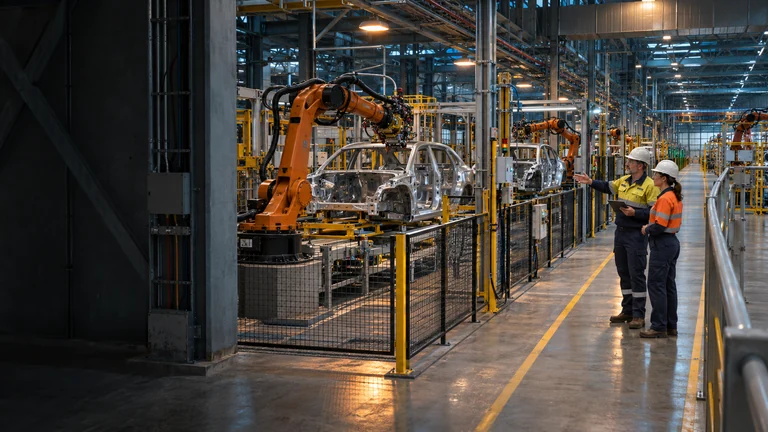
Productive wealth on the factory floor
An imagined Australian automotive and robotics production floor. AI-generated concept image illustrating physical productive capacity and the people who understand it.
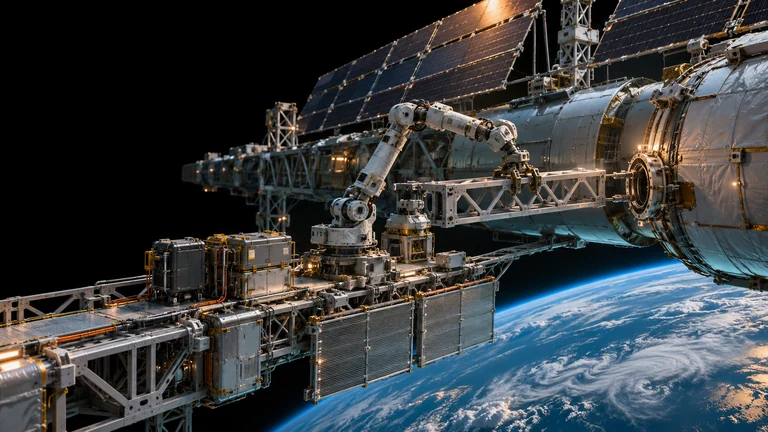
A speculative orbital industrial capability
A speculative orbital construction and manufacturing scene above Earth. AI-generated concept image, not a photograph of an operating project.
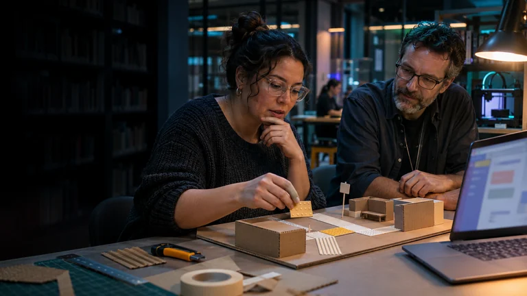
People Practice
An imagined library studio where a person can learn, create and direct their own tools. AI-generated concept image.

Public Decisions
An imagined civic meeting where residents examine evidence and question a public decision. AI-generated concept image.
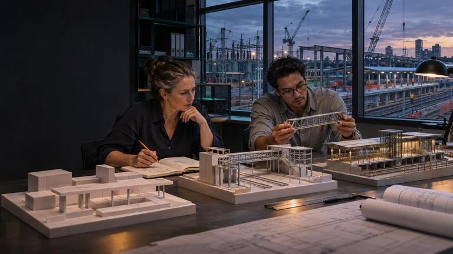
Five Horizons
An imagined planning studio comparing possible stages of infrastructure development. AI-generated concept image.
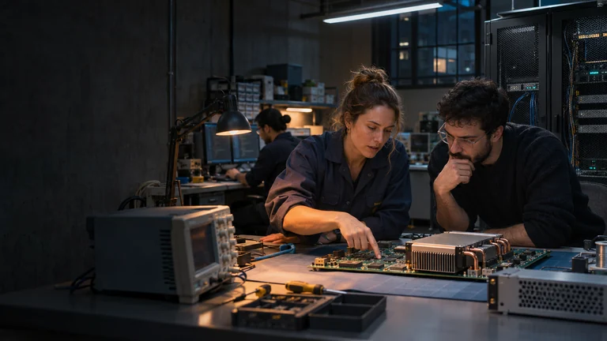
Sovereign Capacity
An imagined Australian AI laboratory combining local expertise, software and computing hardware. AI-generated concept image.
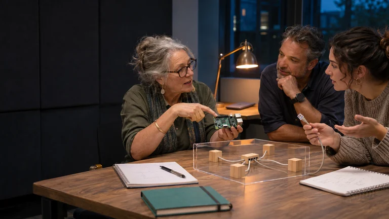
Glossary
An imagined adult learning session using tangible objects to explain unfamiliar ideas. AI-generated concept image.
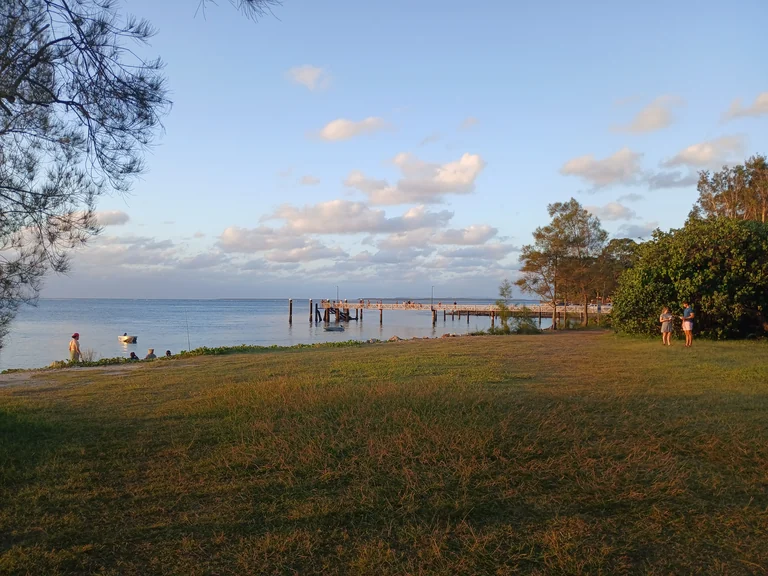
Amity Point jetty
Amity Point jetty, Minjerribah.
Pacificwizard · CC0
Resized and converted to WebP.

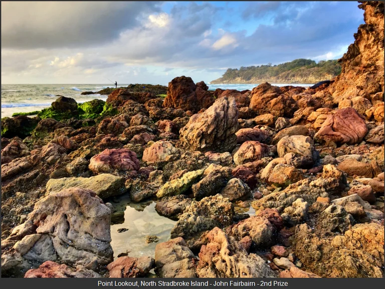
Point Lookout, Minjerribah
Point Lookout, Minjerribah, photographed in 2020.
John Fairbairn · CC BY 4.0
Resized and converted to WebP, preserving the credit border.

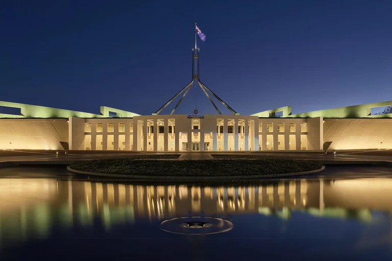
Parliament House at dusk, Canberra
Parliament House, Canberra, at dusk on 7 April 2017.
Thennicke · CC BY-SA 4.0
Resized and converted from JPEG to WebP; native proportions retained. No cropping or generative alterations.

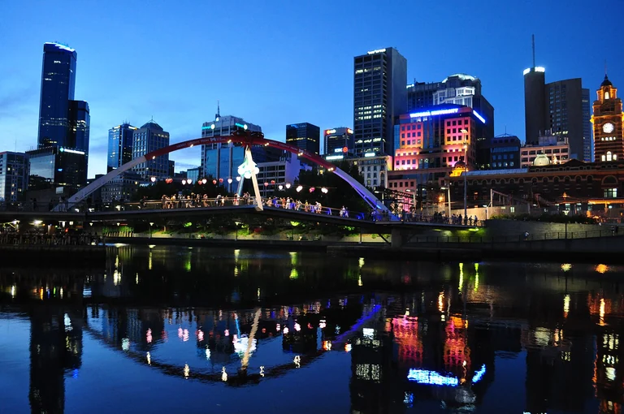
Melbourne skyline
Melbourne skyline on Christmas evening, 25 December 2015.
Caroline Jones · Public domain
Resized and converted from JPEG to WebP; native proportions retained. No cropping or generative alterations.
.jpg){kind=link}
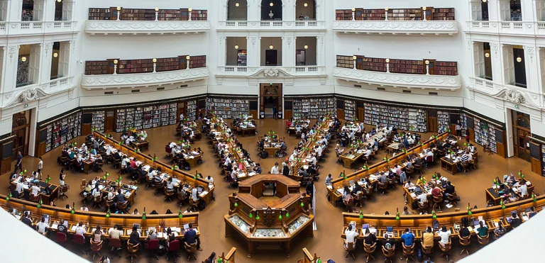
State Library of Victoria, Melbourne
State Library of Victoria, Melbourne, on 29 October 2017.
Crisco 1492 · CC BY-SA 4.0
Resized and converted from JPEG to WebP; native proportions retained. No cropping or generative alterations.

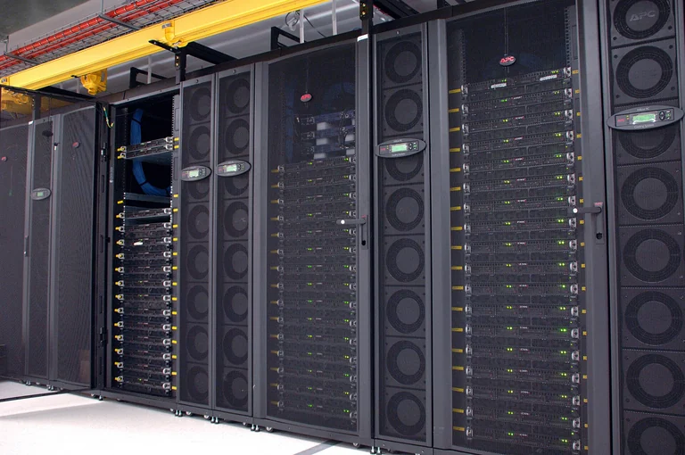
CSIRO GPU cluster at the data centre
CSIRO GPU cluster at a data centre, photographed on 19 April 2010.
division, CSIRO · CC BY 3.0
Resized and converted from JPEG to WebP; native proportions retained. No cropping or generative alterations.


Australian House of Representatives chamber
The House of Representatives chamber, Parliament House, Canberra, on 22 January 2012.
JJ Harrison (https://www.jjharrison.com.au/) · CC BY-SA 3.0
Resized and converted from JPEG to WebP; native proportions retained. No cropping or generative alterations.


Suburban rooftop solar, Canberra
Suburban rooftops with solar panels in Canberra, photographed on 7 February 2026.
Benlisquare · CC BY-SA 4.0
Resized and converted from JPEG to WebP; native proportions retained. No cropping or generative alterations.

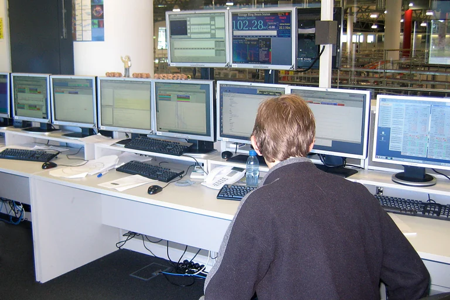
Australian Synchrotron control room
The Australian Synchrotron control centre, Clayton, Victoria, on 14 June 2007.
John O'Neill (jjron) · CC BY-SA 3.0
Resized and converted from JPEG to WebP; native proportions retained. No cropping or generative alterations.

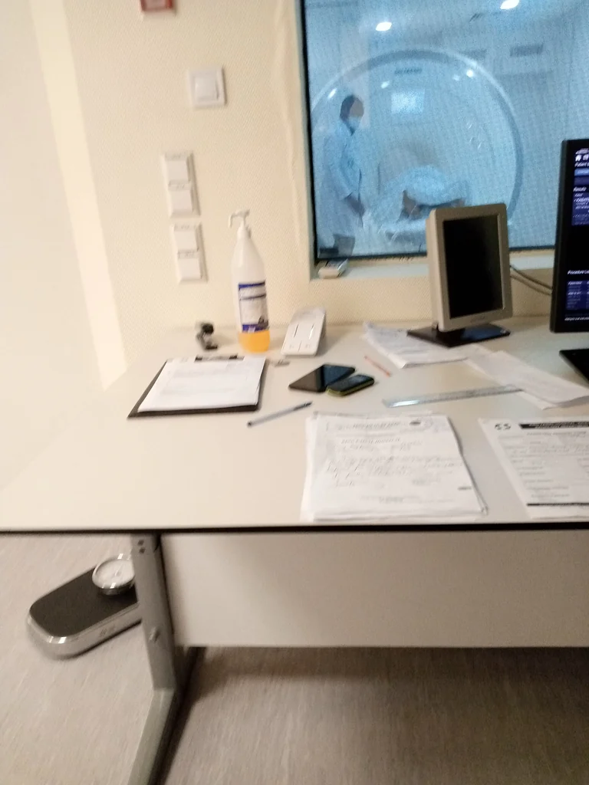
MRI scanner and control workstation
MRI control workstation and scanner at King Faisal hospital, photographed on 6 April 2021.
Lizadeborah03 · CC BY-SA 4.0
Resized and converted from JPEG to WebP; native proportions retained. No cropping or generative alterations.

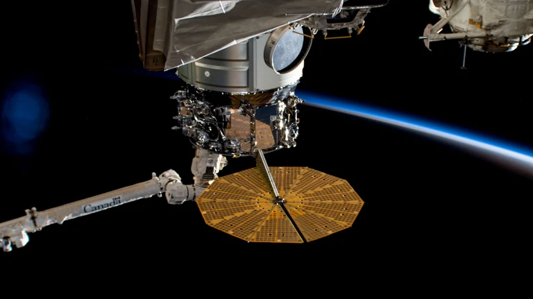
The Cygnus space freighter in the grip of the Canadarm2
Cygnus in Canadarm2’s grip at the International Space Station, 20 April 2023.
NASA / Johnson Space Center · Public domain in the United States (US government photograph); NASA Media Usage Guidelines apply.
Resized and converted to WebP.

City lights of southern India and Sri Lanka
Southern India and Sri Lanka at night from the International Space Station, 30 October 2021.
NASA / Johnson Space Center · Public domain in the United States (US government photograph); NASA Media Usage Guidelines apply.
Resized and converted to WebP.
Reading and accessibility
All chapters and references are readable without JavaScript. Search, the calculator and the connection selector run in your browser. The site uses descriptive links, a heading hierarchy, keyboard controls, a skip link and a print layout. It includes a human-readable site map and a machine-readable sitemap.
Original material follows the Strange But True Public Source Licence. Third-party photographs retain their stated licences.